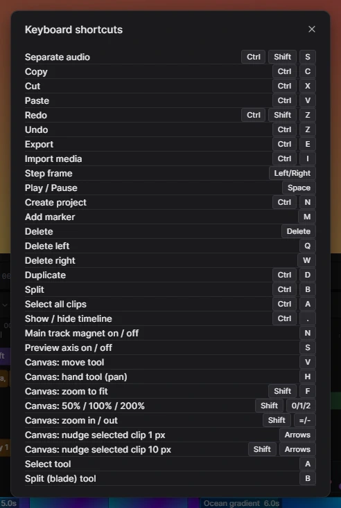

Для людейДовідка2 хв читання
Гарячі клавіші
Гарячі клавіші помітно пришвидшують монтаж. Список завжди під рукою і в самому Kadr: кнопка Shortcuts на верхній панелі або Ctrl+/.
Що вивчити найперше
Space пуск / пауза · Ctrl+B розрізати · Delete видалити · Q / W видалити ліворуч / праворуч · Ctrl+Z скасувати
← → один кадр · Ctrl+C / Ctrl+V копіювати / вставити · M маркер · Ctrl+E експорт
Перемкніть розкладку на англійську. Літерні гарячі клавіші (Ctrl+B, Q, W, M…) розпізнаються за літерою, тож в українській розкладці вони не спрацюють. Комбінації з Shift для масштабу полотна працюють у будь-якій розкладці.
Загальні
| Дія | Клавіші |
|---|---|
| Створити проєкт | Ctrl+N |
| Імпорт медіа | Ctrl+I |
| Експорт | Ctrl+E |
| Скасувати | Ctrl+Z |
| Повторити | Ctrl+Shift+Z |
| Показати гарячі клавіші | Ctrl+/ |
| Закрити вікно чи меню | Esc |
Відтворення
| Дія | Клавіші |
|---|---|
| Пуск / пауза | Space |
| Кадр назад / вперед | ← / → |
Монтаж кліпів
| Дія | Клавіші |
|---|---|
| Розрізати в позиції курсора | Ctrl+B |
| Видалити ліворуч від курсора | Q |
| Видалити праворуч від курсора | W |
| Видалити виділені кліпи (або виділений перехід) | Delete або Backspace |
| Дублювати | Ctrl+D |
| Копіювати | Ctrl+C |
| Вирізати | Ctrl+X |
| Вставити в позиції курсора | Ctrl+V |
| Додати маркер | M |
| Відокремити звук від відео | Ctrl+Shift+S |
Таймлайн
| Дія | Клавіші |
|---|---|
| Інструмент виділення | A |
| Інструмент розрізання (лезо) | B |
| Виділити всі кліпи | Ctrl+A |
| Додати кліп до виділення | Shift+клік або Ctrl+клік |
| Виділити рамкою | протягнути з порожнього місця (з Shift / Ctrl — додати) |
| Магніт головної доріжки — увімк. / вимк. | N |
| Вісь перегляду — увімк. / вимк. | S |
| Масштаб таймлайна | Ctrl+= / Ctrl+- або Ctrl+коліщатко миші |
| Прокрутка вбік | Shift+коліщатко миші |
| Показати / сховати таймлайн | Ctrl+. |
Полотно плеєра
| Дія | Клавіші |
|---|---|
| Інструмент переміщення | V |
| Інструмент «рука» (панорамування) | H або перетягування середньою кнопкою миші |
| Вмістити в екран | Shift+F |
| Масштаб 50% / 100% / 200% | Shift+0 / Shift+1 / Shift+2 |
| Наблизити / віддалити | Shift+= / Shift+- або Ctrl/Shift+коліщатко |
| Зсунути виділений кліп на 1 px | стрілки (після кліку по кадру) |
| Зсунути на 10 px | Shift+стрілки |
| Обрати наступний кліп під поточним | Alt+клік |
| Рухати лише в одному напрямку | утримувати Shift під час перетягування |
| Рухати без прилипання | утримувати Alt під час перетягування |
| Масштаб кроками по 5 % / поворот по 15° | утримувати Shift, тягнучи маркер |
У панелях
| Де | Дія | Клавіші |
|---|---|---|
| Вкладка Media | Додати виділену картку на таймлайн | Enter |
| Перейменувати | F2 | |
| Прибрати з проєкту | Delete | |
| Картки бібліотеки | Додати картку, що у фокусі | Enter |
| Edit captions | Розділити репліку в місці курсора | Enter |
| Новий рядок у репліці | Ctrl+Enter | |
| Об’єднати з попередньою реплікою | Backspace на початку | |
| Об’єднати з наступною реплікою | Delete у кінці | |
| Transcript | Розширити виділення слів | Shift+клік |
| Вирізати виділені слова з відео | Delete | |
| Зняти виділення | Esc |

Поки ви вводите текст у поле, гарячі клавіші не спрацьовують — тож літера «m» у субтитрі ніколи не поставить маркер. На Mac замість Ctrl використовується Cmd.